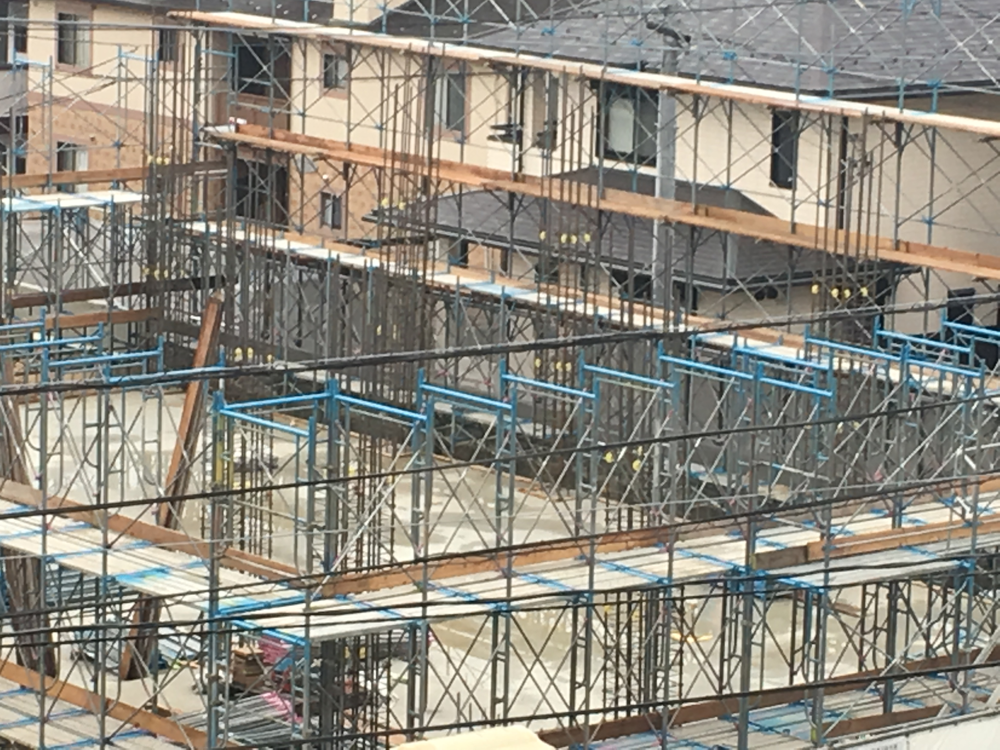
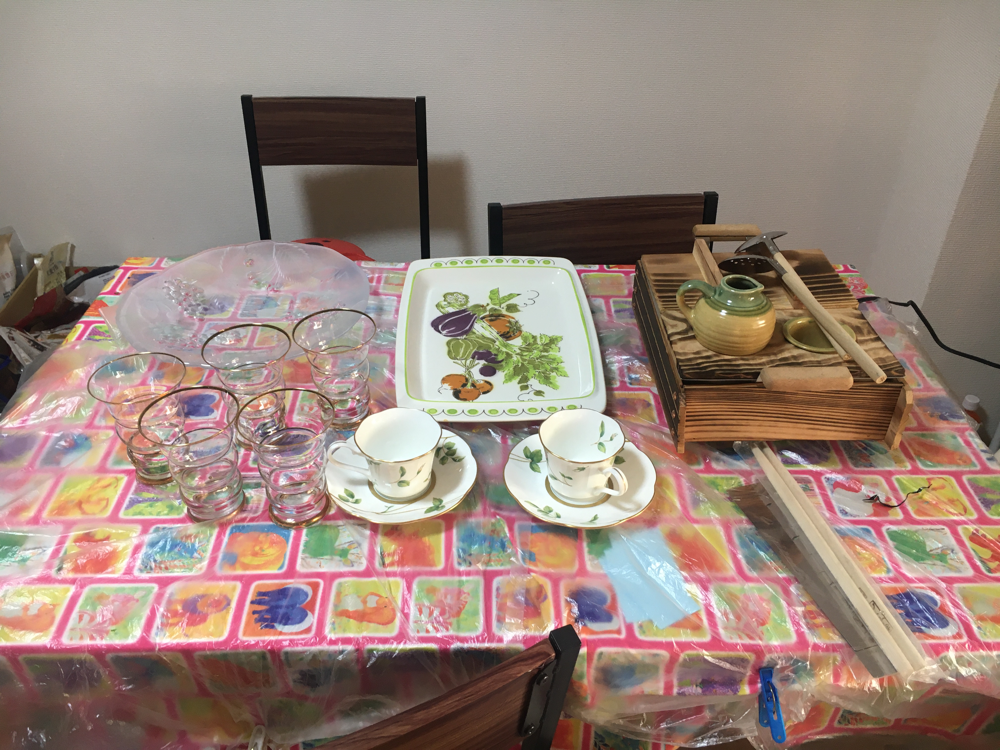

上一章
先来看看我凌乱不堪的家里。。

这是饭桌，桌布是在农家超市买的，很漂亮动物图案。为了好好保存它，上面铺了时尚透明桌布。左下角是笔记，写上每周的购物清单。
小t子一看就明白的塑料袋。从大学开始，我不知不觉原来自己有搜集塑料袋的习惯。
东西我很多时候随意放在地上。

现在去阳台看看。看到我挂着三个日式くず玉吗？还有在独岛买的韩国大国企，一万韩币。

冬季雪景
秋冬云海

日本经常放烟花（日语花火）

平时日景

平时夜景，这里其实能看到2号线。

我刚来时，阳台对面在盖房。当时我去了神户的地震博物馆，知道1981年后日本建筑的加固工程，带有十字架，我看这个建筑是有的。


我的小手工隆重登场。日本是个手工大国，这几年除了中国结我还学了别的。这是礼物盒，买书学的。

把我的中国结放在礼物盒送给人，更显高贵。

最原先学的就是这个八彩八角盒。我在成田机场候机厅玩过简单的，那里有这个盒子展示，我很喜欢就记下来在网上找教程，后来买书学了其他。这个小经理教会学遇到有兴趣的要马上抓住，之后就能发展下去。
六角纸盒

种菜课学的圣诞花圈，属于稻草工艺（あら工芸）。
学了上面的圣诞圈，我买了稻草工艺的书做了这个给小t子。

这个在博物馆学的，可以给小朋友玩。
这是一个超级大作，连续做要花三四天，在youtube学的原型，自己改良。原型中国结纽扣结地方用珠子，而且不能挂的。

这是用米袋做的时尚购物袋。有次去农家超市买菜送这个，之后我自己查了下，网上有教程，就买了些米袋自己做了。
新发型

小t子送的印度衣服

整套印度衣服

活动（イベント）买的二手昭和裙子

出差经过仓敷买了500日元浴衣，很漂亮的。

活动（イベント）买的钩针衣服，2000日元，非常好看。
仓桥岛游泳池买的，那里虽然不是服装店，不过有衣服买，都是新的而且便宜。

车站临时店铺特特卖，全部500日元。我买了2万日元。当时真是喜欢就买。


托去印度交流的朋友买的印度民族服。
看看我的餐具。

ふるさと纳税的礼品，仓桥到用牡蛎壳做的杯子。

我最安的安妮盘。2018年参加平和纪念日认识的人，后来去做义工人家送的。

又是安妮，韩国买的。韩国很多安妮，15000韩币。

那次去高屋跳蚤市场，遇到アンの時間的老板，这些都是别人不要给她的，都是新，但很便宜。餐具都是日本制，有牌子的，我带回来香港了。
小羽离开西条时给我的寿喜锅，经常用来做饭。还有花花送的帽子。

自从去了北京，我的手一直有湿疹，时好时不好。这是发作的时候，当时我对墨鱼汁敏感，要用手套处理。后来我天天吃黄姜粉就没事了。
***加照片***
我脖子多年有湿疹，2023年前特别严重，我狠心一把用饮食调理。戒奶（用椰奶），蛋，小麦，糖，调味戒掉所有辛辣。肉类支持鸡胸肉。坚持了几个月好了很多。后来我冰箱坏了，饮食不方便，差不多一周只吃一次肉。我发现自己越不吃越不想吃。
下一章